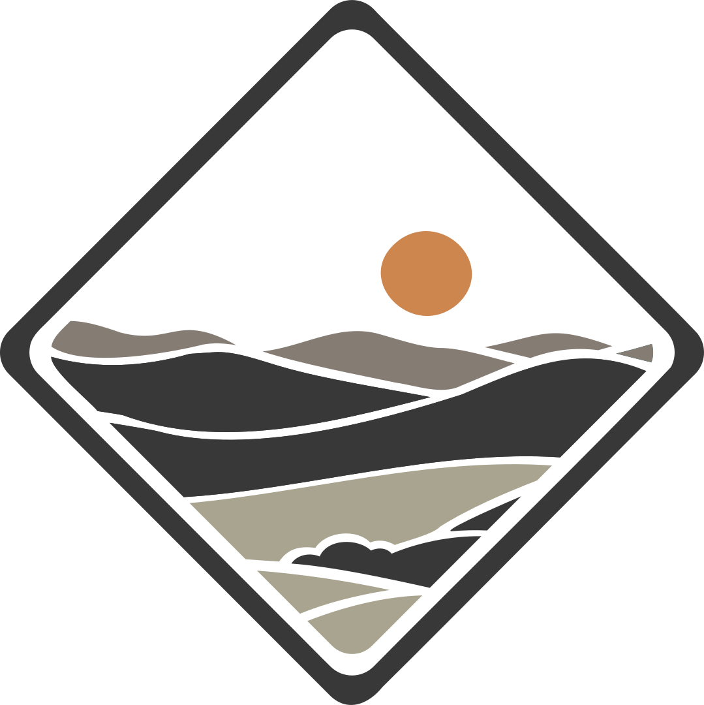

Passaporte Serra NegraErro 404
Este caminho não existe.
Você pode voltar ao início, explorar os conteúdos disponíveis ou pesquisar uma ideia para continuar navegando pela demonstração.

Passaporte Serra NegraErro 404
Você pode voltar ao início, explorar os conteúdos disponíveis ou pesquisar uma ideia para continuar navegando pela demonstração.